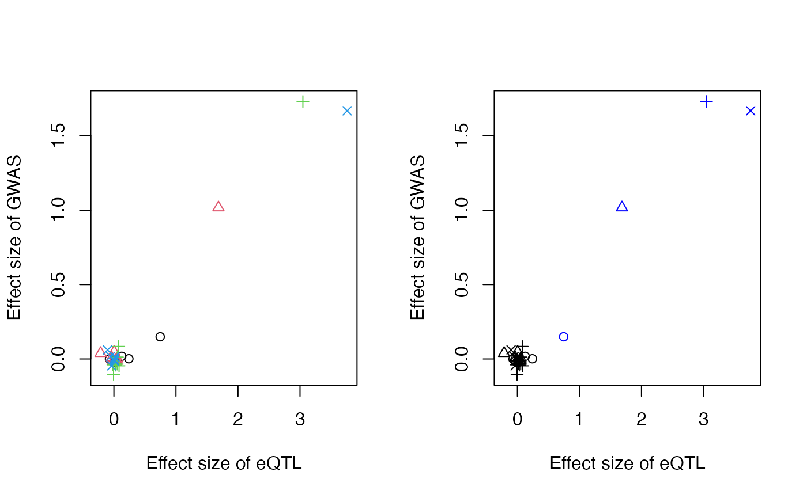

mrlocus
Anqi Zhu, Nana Matoba, Jason Stein, Michael Love
07/03/2020
mrlocus.RmdThis is a vignette. This is a citation (Carpenter et al. 2017).
Here we show mrlocus on simulated data. We also have helper functions collapseHighCorSNPs and flipAllelesAndGather for importing summary statistics.
library(mrlocus) set.seed(1) out <- makeSimDataForMrlocus()
plotInitEstimates(out)

options(mc.cores=2) for (j in 1:nclust) { suppressWarnings({ fit[[j]] <- fitBetaColoc(nsnp=nsnp[j], beta_hat_a=out$beta_hat_a[[j]], beta_hat_b=out$beta_hat_b[[j]], se_a=out$se_a[[j]], se_b=out$se_b[[j]], Sigma_a=out$Sigma_a[[j]], Sigma_b=out$Sigma_b[[j]]) }) }
res <- list(beta_hat_a=lapply(fit, `[[`, "beta_hat_a"), beta_hat_b=lapply(fit, `[[`, "beta_hat_b"), sd_a=out$se_a, sd_b=out$se_b)
res <- extractForSlope(res, plot=TRUE)

suppressWarnings({ res <- fitSlope(res, iter=10000) })
library(rstan)
## Loading required package: StanHeaders## Loading required package: ggplot2## rstan (Version 2.19.3, GitRev: 2e1f913d3ca3)## For execution on a local, multicore CPU with excess RAM we recommend calling
## options(mc.cores = parallel::detectCores()).
## To avoid recompilation of unchanged Stan programs, we recommend calling
## rstan_options(auto_write = TRUE)## Inference for Stan model: slope.
## 4 chains, each with iter=10000; warmup=5000; thin=1;
## post-warmup draws per chain=5000, total post-warmup draws=20000.
##
## mean se_mean sd 2.5% 25% 50% 75% 97.5% n_eff Rhat
## alpha 0.488 0.001 0.085 0.318 0.443 0.495 0.530 0.652 4496 1.002
## sigma 0.253 0.020 0.245 0.030 0.076 0.180 0.341 0.929 156 1.020
##
## Samples were drawn using NUTS(diag_e) at Fri Jul 3 20:05:19 2020.
## For each parameter, n_eff is a crude measure of effective sample size,
## and Rhat is the potential scale reduction factor on split chains (at
## convergence, Rhat=1).plotMrlocus(res, main="mrlocus")
## plotting a 10%-90% interval
Session info
## R version 4.0.0 (2020-04-24)
## Platform: x86_64-apple-darwin17.0 (64-bit)
## Running under: macOS Catalina 10.15.5
##
## Matrix products: default
## BLAS: /Library/Frameworks/R.framework/Versions/4.0/Resources/lib/libRblas.dylib
## LAPACK: /Library/Frameworks/R.framework/Versions/4.0/Resources/lib/libRlapack.dylib
##
## locale:
## [1] en_US.UTF-8/en_US.UTF-8/en_US.UTF-8/C/en_US.UTF-8/en_US.UTF-8
##
## attached base packages:
## [1] stats graphics grDevices utils datasets methods base
##
## other attached packages:
## [1] rstan_2.19.3 ggplot2_3.3.0 StanHeaders_2.19.2 mrlocus_0.0.13
##
## loaded via a namespace (and not attached):
## [1] Rcpp_1.0.4.6 pillar_1.4.4 compiler_4.0.0 prettyunits_1.1.1
## [5] tools_4.0.0 digest_0.6.25 pkgbuild_1.0.8 tibble_3.0.1
## [9] evaluate_0.14 memoise_1.1.0 lifecycle_0.2.0 gtable_0.3.0
## [13] pkgconfig_2.0.3 rlang_0.4.6 cli_2.0.2 parallel_4.0.0
## [17] yaml_2.2.1 pkgdown_1.5.1 xfun_0.13 loo_2.2.0
## [21] gridExtra_2.3 withr_2.2.0 dplyr_0.8.5 stringr_1.4.0
## [25] knitr_1.28 vctrs_0.2.4 desc_1.2.0 fs_1.4.1
## [29] tidyselect_1.0.0 stats4_4.0.0 rprojroot_1.3-2 grid_4.0.0
## [33] inline_0.3.15 glue_1.4.0 R6_2.4.1 processx_3.4.2
## [37] fansi_0.4.1 rmarkdown_2.1 purrr_0.3.4 callr_3.4.3
## [41] magrittr_1.5 codetools_0.2-16 matrixStats_0.56.0 ellipsis_0.3.0
## [45] backports_1.1.6 scales_1.1.1 ps_1.3.3 htmltools_0.4.0
## [49] MASS_7.3-51.6 assertthat_0.2.1 colorspace_1.4-1 stringi_1.4.6
## [53] munsell_0.5.0 crayon_1.3.4